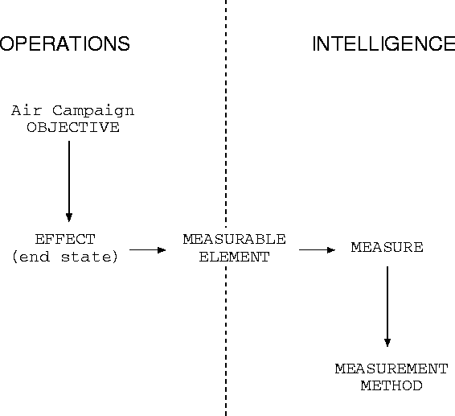

Although this document does not intend to set methodological guidelines for creating measures of effect, we thought it would be interesting to report on an important issue raised during the discussions that led to the representation proposed here. In this section, we will briefly discuss the potential role of measures of effect in integrating Intelligence and Operation more closely in an air campaign.
There is usually a sharp separation between Operations (OPS) and Intelligence (INTEL) groups in air campaign planning. We propose that measures of effect can be seen (and used) as a formal connective element between the two groups. Figure 3 pictures the relationship. An air campaign objective is developed by OPS. Its measure of effect specifies how to assess whether or not (or to what extent) the objective has been achieved -- that is why it must be measurable. The measure of effect is thus based on a measurable element. This measurable element is (or should be) used in the INTEL side as a specification of what OPS needs to be measured in order to assess the execution of the plan. For this end, INTEL knows of several measurement methods to determine the current value of a measurable element. As we can see, the connecting point between OPS and INTEL is that in order to define how to assess an air campaign plan, OPS employs measurable elements that INTEL is supposed to actually measure during the campaign.

Figure 3: Measures of effect as a formal connection between INTEL
and OPS.
The important point here is that ideally the set of measurable elements used by OPS should be the same one that INTEL has measurement methods to effectively determine the value. We found out that there is frequently a mismatch between these. For example, OPS may use a measurable element like ``air superiority'', which is not directly measurable and may force INTEL to further specify it in terms of more detailed measurable elements (e.g. aircraft losses) that may or may not match with what OPS intended. The other way around, OPS often does not make use of all the possibilities know to INTEL in terms of measurable elements, because it does not know about it. Finally, sometimes one measurable element may be much more easy or cheap to measure than another, and it would help in reducing the cost and improving the effectiveness of campaigns if this was known to OPS at the moment it specifies the measures of effect. The result is that INTEL is not able to measure the plan specified by OPS, has difficulty with measuring it, or does it in a sub-optimal manner. The consequences for the campaign effectiveness and efficiency can be very serious.
Therefore, we believe it would be strongly beneficial to define, as formally as possible, a set of ``standard'' measurable elements which is agreed upon by INTEL and OPS. This set should be based initially on INTEL's capability, that is, it should define what INTEL has methods to measure. Further, it could work as an instrument in which OPS can suggest INTEL to develop techniques and methods for measuring elements it cannot measure currently. It can also contain preferences indicating which elements are easier or cheaper to measure,a nd should be preferred over other elements if possible. Finally, these ``standard'' measurable elements can help defining what is the ideal level of abstraction for the measurable elements (so that they are neither too vague nor overly specific), and, most importantly, to specify what is the intended meaning of the measurable elements.